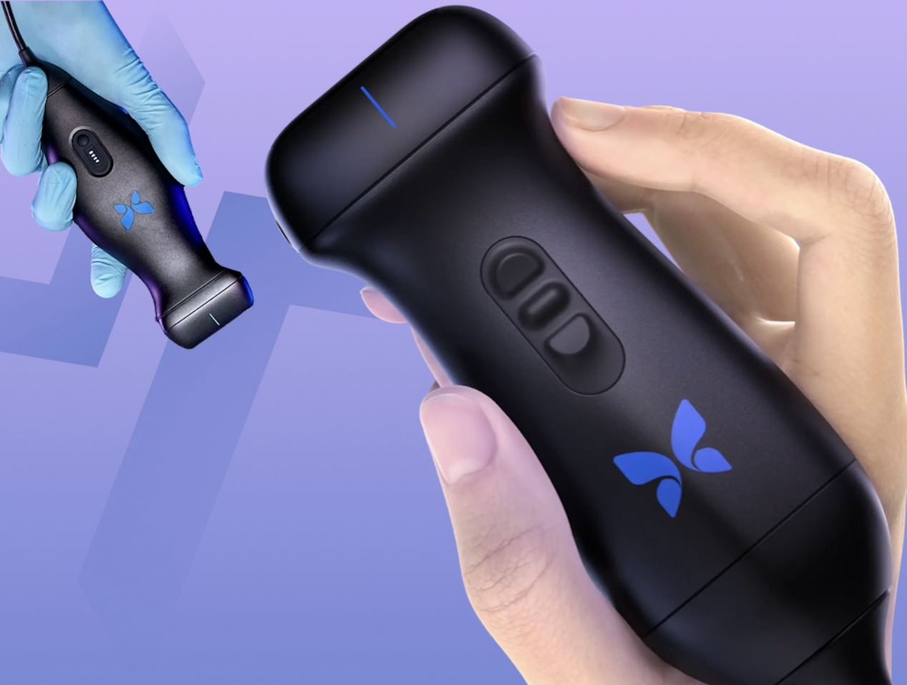
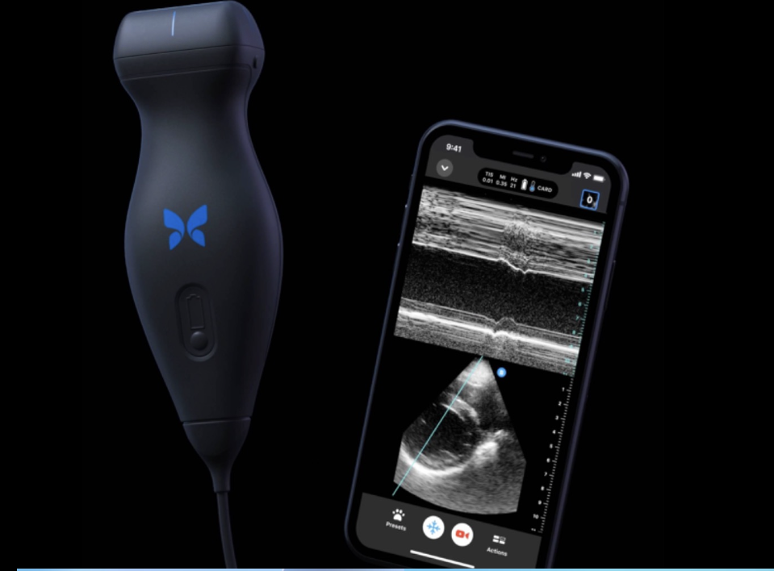

A market and technology analysis of the Butterfly iQ handheld ultrasound, built to explain a genuinely technical product, chip-based imaging, AI-assisted diagnostics, cloud telemedicine, to a non-technical audience without losing what makes it interesting.

Hospital imaging still runs into the same five walls: digital systems that can't share data easily, machines too large and room-bound for emergency use, price tags in the tens of thousands, little to no access in rural or under-resourced settings, and no good way to image a critically ill patient without moving them. Butterfly iQ was built to answer all five at once, by replacing a cart full of hardware with a single chip-based probe that plugs into a phone.
Butterfly iQ is a portable point-of-care ultrasound (POCUS) device that connects to a smartphone or tablet. A single silicon chip-based probe replaces the multiple physical transducers a traditional ultrasound cart requires, and it's FDA-cleared for whole-body imaging in settings from emergency rooms to rural clinics.

The device pairs with a standard phone, no separate monitor or console required.
The chip captures raw ultrasound signal, but everything after that is data science: digital signal processing to remove noise, AI/ML interpretation that automatically recognizes structures and takes measurements, real-time image reconstruction, and a feedback loop that improves the underlying models as more scans are collected, all wrapped in HIPAA-compliant cloud infrastructure for telemedicine.
The clearest evidence for the device isn't a spec sheet, it's what happened when a real EMS system deployed it at scale.
That 10% included early field diagnosis of conditions like pulmonary embolism and aortic aneurysm, exactly the scenarios where getting imaging before the hospital changes the outcome.
Automated measurements and structure recognition let clinicians act on a scan immediately, instead of waiting on a specialist read.
A $500, pocket-sized device puts imaging in reach of small clinics, EMS crews, and global health settings that could never afford a traditional machine.
The Hennepin EMS numbers show this isn't hypothetical, one in ten field scans changed what paramedics actually did for the patient.